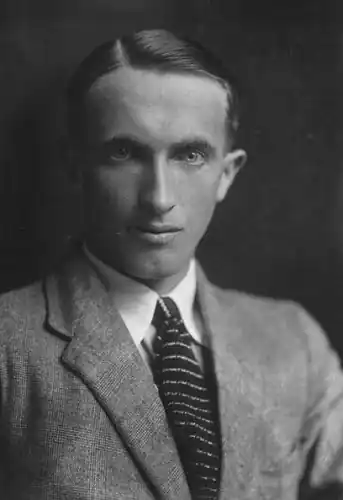

О'Флаерті Лаєм народився 28 серпня 1896 року в бідній селянській родині. У 1908 році вступив одночасно до трьох коледжів. Серед предметів його цікавила теологія, і він збирався стати кліриком. Однак у 1914 р. він вступив до Дублінського університету, але незабаром записався до Ірландського гвардійського піхотного полку. У 1917 році О'Флаерті вирушає солдатом на Першу світову війну, де його важко поранять і в 1918 році звільняють у запас. Після війни багато подорожує країнами Середземного моря, США, Канадою, Південною Америкою та Близьким Сходом. Працював матросом на торгових судах, шахтарем, офіціантом, бродячим робітником.
У Бостоні він зустрівся зі своїм братом, який брав активну участь у соціалістичному русі, що пробудило в О'Флаерті ще більший інтерес до комунізму. А вже в 1920 році, повернувшись на батьківщину, він вступає до Соціалістичної партії Ірландії (в 1921 Комуністична партія Ірландії, що прийняла назву) і бере участь у вуличних зіткненнях разом з лівим крилом ІРА.
Після проголошення 12 січня 1922 року Ірландської Вільної держави він відходить від політики і присвячує себе літературі, багато подорожує Європою, але найбільше любить Францію. Після участі в революційній діяльності в Ірландії О'Флаерті в 1922 році оселився в Англії; він повернувся до Дубліна в середині 1920-х років. Серед його книжок — "Жінка твого сусіда" (1923), його успішний перший роман; "Чорна душа" (1924) — історія змученого колишнього солдата, який шукає спокою на віддаленому західному острові; "Інформер" (1925; екранізація оскароносного фільму Джона Форда, 1935) про розгубленого революціонера, який зраджує свого друга під час ірландських "негараздів"; "Скерретт" (1932), схвалена критиками історія конфлікту між парафіяльним священиком і вчителем; Голод (1937), відтворення впливу голоду в Ірландії 1840-х років на окремих осіб невеликої громади; Оповідання (1937; перероб. вид. 1956); "Повстання" (1950), роман про Великоднє повстання 1916; The Pedlar's Revenge and Other Stories (1976); а також кілька інших романів і збірок оповідань. Його автобіографія "Позор диявола" була опублікована в 1934 році.